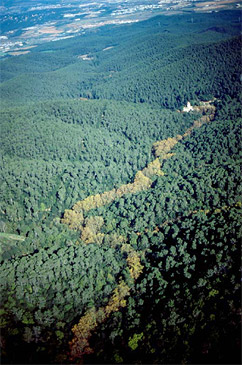

|
Un xic d'història de la masia i els seus entorns
A la vall de Gausac, un paratge ple d'història on l'empremta humana del passat hi és molt present, trobem la masia de Can Borrell, just quan la vall s'obre cap a la plana del Vallès. Temps enrera, la vall tingué propietaris, en Bertran d'Esplugues i la seva muller Berenguera de Cercedol, que la vengueren l'any 1272 (s. XIII) a Bernat de Palou.
L'època medieval tingué una gran rellevància a Catalunya. La societat catalana va esdevenir un dels models més complets de jerarquia feudal. Això fa que aquesta etapa sigui probablement, una de les més explicatives per entendre el present de la zona on es troba Can Borrell. Una zona rica en patrimoni arquitectònic, arqueològic, històric i paisatgístic. Tota aquesta riquesa patrimonial, ens permetrà entendre un xic més el present tot rememorant el passat, un passat, no tant llunyà.
Què va passar a la Vall de Gausac?
Per aquestes contrades, i no gaire lluny d'aquí, existí en el seu temps una vila anomenada Cercedol. Durant la primera meitat del segle XI, la unió d'aquesta vila termenada, juntament amb l'alou que envoltava el monestir de Sant Cugat, i la vall de Gausac, entre altres propietats, formaren el que ara coneixem com a terme de Sant Cugat conegut antigament com a castell d'Octavià (Castrum Octavianum). Aquest darrer mot és el que inicialment va donar nom al municipi, però va anar quedant en desús des del segle XIII i s'acabarà identificant més amb el castell feudal, quedant el mot de Sant Cugat com el referent del terme vilatà, tal i com el coneixem avui dia.
Sembla ser que la vall de Gausac depenia de la parròquia de Sant Vicenç de Cercedol pertanyent a l'esmentada vila de Cercedol, tot i que l'escassetat de documents no acaben de corroborar el fet. El que sí sembla més probable és l'existència d'una parròquia anomenada Sta. Maria de Gausac, la qual surt documentada per primera vegada l'any 1201 i posteriorment també al 1272,
en la butlla papal de Calixte II. De fet, |
|

 |
en temps de la Quadra de Vilanova, el lloc on els habitants d'aquesta Quadra es reunien no era a St. Vicenç de Cercedol, sinó a Sta. Maria de Gausac, que més tard s'anomenarà Sta. Maria del Bosc i que actualment és l'ermita de Sant Adjutori molt a prop de Can Borrell.
Nota: Definicions extretes del Diccionari de la llengua catalana de l'Institut d'Estudis Catalans. Edició 1995.
|
|